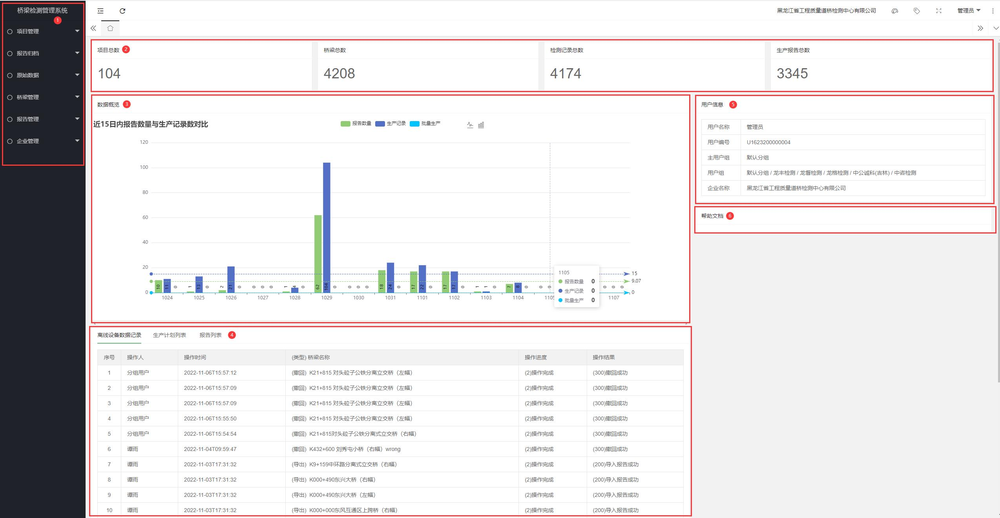

详细功能
登录 桥梁检测管理系统 ,看到的是系统主页,这里分为6个部分的信息展示。

图1 系统主页模块图
第①部分是系统的功能导航目录。
第②部分是整个系统对项目、桥梁、检测记录和已生产报告总数的一个统计结果。
第③部分数据概况是近15日报告数量与生产记录数的条形统计图。
第④部分展现了目前系统最新的离线设备数据记录、生产计划列表和报告列表。
第⑤部分是当前登录人员的各类信息。
第⑥部分是系统的帮助文档，解答一些常见的用户问题。
项目管理
项目列表 :可以创建新的项目，查看已创建的项目，或对项目进行修改和删除操作。
筛选
| 省市名 | 城市名 | 海拔高度(m) | 风压(kN/㎡) | 雪压(kN/㎡) | 基本气温（℃） | 雪荷载准永久值系数分区 | |||||
|---|---|---|---|---|---|---|---|---|---|---|---|
| R=10 | R=50 | R=100 | R=10 | R=50 | R=100 | 最低 | 最高 | ||||
| 北京 | 北京市 | 54.0 | 0.30 | 0.45 | 0.50 | 0.25 | 0.40 | 0.45 | -13 | 36 | Ⅱ |
| 天津 | 天津市 | 3.3 | 0.30 | 0.50 | 0.60 | 0.25 | 0.40 | 0.45 | -12 | 35 | Ⅱ |
| 天津 | 塘沽 | 3.2 | 0.40 | 0.55 | 0.65 | 0.20 | 0.35 | 0.40 | -12 | 35 | Ⅱ |
| 上海 | 上海市 | 2.8 | 0.40 | 0.55 | 0.60 | 0.10 | 0.20 | 0.25 | -4 | 36 | Ⅲ |
| 重庆 | 重庆市 | 259.1 | 0.25 | 0.40 | 0.45 | - | - | - | 1 | 37 | - |
| 奉节 | 607.3 | 0.25 | 0.35 | 0.45 | 0.20 | 0.35 | 0.40 | -1 | 35 | Ⅲ | |
| 梁平 | 454.6 | 0.20 | 0.30 | 0.35 | - | - | - | -1 | 36 | - | |
| 万州 | 186.7 | 0.20 | 0.35 | 0.45 | - | - | - | 0 | 38 | - | |
| 涪陵 | 273.5 | 0.20 | 0.30 | 0.35 | - | - | - | 1 | 37 | - | |
| 金佛山 | 1905.9 | - | - | - | 0.35 | 0.50 | 0.60 | -10 | 25 | Ⅱ | |
| 河北 | 石家庄市 | 80.5 | 0.25 | 0.35 | 0.40 | 0.20 | 0.30 | 0.35 | -11 | 36 | Ⅱ |
| 蔚县 | 909.5 | 0.20 | 0.30 | 0.35 | 0.20 | 0.30 | 0.35 | -24 | 33 | Ⅱ | |
| 邢台市 | 76.8 | 0.20 | 0.30 | 0.35 | 0.25 | 0.35 | 0.40 | -10 | 36 | Ⅱ | |
| 丰宁 | 659.7 | 0.30 | 0.40 | 0.45 | 0.15 | 0.25 | 0.30 | -22 | 33 | Ⅱ | |
| 围场 | 842.8 | 0.35 | 0.45 | 0.50 | 0.20 | 0.30 | 0.35 | -23 | 32 | Ⅱ | |
| 张家口市 | 724.2 | 0.35 | 0.55 | 0.60 | 0.15 | 0.25 | 0.30 | -18 | 34 | Ⅱ | |
| 怀来 | 536.8 | 0.25 | 0.35 | 0.40 | 0.15 | 0.20 | 0.25 | -17 | 35 | Ⅱ | |
| 承德市 | 377.2 | 0.30 | 0.40 | 0.45 | 0.20 | 0.30 | 0.35 | -19 | 35 | Ⅱ | |
| 遵化 | 54.9 | 0.30 | 0.40 | 0.45 | 0.25 | 0.40 | 0.50 | -18 | 35 | Ⅱ | |
| 青龙 | 227.2 | 0.25 | 0.30 | 0.35 | 0.25 | 0.40 | 0.45 | -19 | 34 | Ⅱ | |
| 秦皇岛市 | 2.1 | 0.35 | 0.45 | 0.50 | 0.15 | 0.25 | 0.30 | -15 | 33 | Ⅱ | |
| 霸县 | 9.0 | 0.25 | 0.40 | 0.45 | 0.20 | 0.30 | 0.35 | -14 | 36 | Ⅱ | |
| 唐山市 | 27.8 | 0.30 | 0.40 | 0.45 | 0.20 | 0.35 | 0.40 | -15 | 35 | Ⅱ | |
| 乐亭 | 10.5 | 0.30 | 0.40 | 0.45 | 0.25 | 0.40 | 0.45 | -16 | 34 | Ⅱ | |
| 保定市 | 17.2 | 0.30 | 0.40 | 0.45 | 0.20 | 0.35 | 0.40 | -12 | 36 | Ⅱ | |
| 饶阳 | 18.9 | 0.30 | 0.35 | 0.40 | 0.20 | 0.30 | 0.35 | -14 | 36 | Ⅱ | |
| 沧州市 | 9.6 | 0.30 | 0.40 | 0.45 | 0.20 | 0.30 | 0.35 | - | - | Ⅱ | |
| 黄骅 | 6.6 | 0.30 | 0.40 | 0.45 | 0.20 | 0.30 | 0.35 | -13 | 36 | Ⅱ | |
| 南宫市 | 27.4 | 0.25 | 0.35 | 0.40 | 0.15 | 0.25 | 0.30 | -13 | 37 | Ⅱ | |
| 山西 | 太原市 | 778.3 | 0.30 | 0.40 | 0.45 | 0.25 | 0.35 | 0.40 | -16 | 34 | Ⅱ |
| 右玉 | 1345.8 | - | - | - | 0.20 | 0.30 | 0.35 | -29 | 31 | Ⅱ | |
| 大同市 | 1067.2 | 0.35 | 0.55 | 0.65 | 0.15 | 0.25 | 0.30 | -22 | 32 | Ⅱ | |
| 河曲 | 861.5 | 0.30 | 0.50 | 0.60 | 0.20 | 0.30 | 0.35 | -24 | 35 | Ⅱ | |
| 五寨 | 1401.0 | 0.30 | 0.40 | 0.45 | 0.20 | 0.25 | 0.30 | -25 | 31 | Ⅱ | |
| 兴县 | 1012.6 | 0.25 | 0.45 | 0.55 | 0.20 | 0.25 | 0.30 | -19 | 34 | Ⅱ | |
| 原平 | 828.2 | 0.30 | 0.50 | 0.60 | 0.20 | 0.30 | 0.35 | -19 | 34 | Ⅱ | |
| 离石 | 950.8 | 0.30 | 0.45 | 0.50 | 0.20 | 0.30 | 0.35 | -19 | 34 | Ⅱ | |
| 阳泉市 | 741.9 | 0.30 | 0.40 | 0.45 | 0.20 | 0.35 | 0.40 | -13 | 34 | Ⅱ | |
| 榆社 | 1041.4 | 0.20 | 0.30 | 0.35 | 0.20 | 0.30 | 0.35 | -17 | 33 | Ⅱ | |
| 隰县 | 1052.7 | 0.20 | 0.35 | 0.40 | 0.20 | 0.30 | 0.35 | -16 | 34 | Ⅱ | |
| 介休 | 743.9 | 0.25 | 0.40 | 0.45 | 0.20 | 0.30 | 0.35 | -15 | 35 | Ⅱ | |
| 临汾市 | 449.5 | 0.25 | 0.40 | 0.45 | 0.15 | 0.25 | 0.30 | -14 | 37 | Ⅱ | |
| 长治县 | 991.8 | 0.30 | 0.50 | 0.60 | - | - | - | -15 | 35 | - | |
| 运城市 | 376.0 | 0.30 | 0.45 | 0.50 | 0.15 | 0.25 | 0.30 | -11 | 38 | Ⅱ | |
| 阳城 | 659.5 | 0.30 | 0.45 | 0.50 | 0.20 | 0.30 | 0.35 | -12 | 34 | Ⅱ | |
| 内蒙古 | 呼和浩特市 | 1063.0 | 0.35 | 0.55 | 0.60 | 0.25 | 0.40 | 0.45 | -23 | 33 | Ⅱ |
| 额右旗拉布达林 | 581.4 | 0.35 | 0.50 | 0.60 | 0.35 | 0.45 | 0.50 | -41 | 30 | Ⅰ | |
| 牙克石市图里河 | 732.6 | 0.30 | 0.40 | 0.45 | 0.40 | 0.60 | 0.70 | -42 | 28 | Ⅰ | |
| 满洲里市 | 661.7 | 0.50 | 0.65 | 0.70 | 0.20 | 0.30 | 0.35 | -35 | 30 | Ⅰ | |
| 海拉尔市 | 610.2 | 0.45 | 0.65 | 0.75 | 0.35 | 0.45 | 0.50 | -38 | 30 | Ⅰ | |
| 鄂伦春小二沟 | 286.1 | 0.30 | 0.40 | 0.45 | 0.35 | 0.50 | 0.55 | -40 | 31 | Ⅰ | |
| 新巴尔虎右旗 | 554.2 | 0.45 | 0.50 | 0.65 | 0.25 | 0.40 | 0.45 | -32 | 32 | Ⅰ | |
| 新巴尔虎左旗 阿木古朗 |
642.0 | 0.40 | 0.55 | 0.60 | 0.25 | 0.35 | 0.40 | -34 | 31 | Ⅰ | |
| 牙克石市博克图 | 739.7 | 0.40 | 0.55 | 0.60 | 0.35 | 0.55 | 0.65 | -31 | 28 | Ⅰ | |
| 扎兰屯市 | 306.5 | 0.30 | 0.40 | 0.45 | 0.35 | 0.55 | 0.65 | -28 | 32 | Ⅰ | |
| 科右翼前旗阿尔山 | 1027.4 | 0.35 | 0.50 | 0.55 | 0.45 | 0.60 | 0.70 | -37 | 27 | Ⅰ | |
| 科右翼前旗索伦 | 501.8 | 0.45 | 0.55 | 0.60 | 0.25 | 0.35 | 0.40 | -30 | 31 | Ⅰ | |
| 乌兰浩特市 | 274.7 | 0.40 | 0.55 | 0.60 | 0.20 | 0.30 | 0.35 | -27 | 32 | Ⅰ | |
| 东乌珠穆沁旗 | 838.7 | 0.35 | 0.55 | 0.65 | 0.20 | 0.30 | 0.35 | -33 | 32 | Ⅰ | |
| 额济纳旗 | 940.5 | 0.40 | 0.60 | 0.70 | 0.05 | 0.10 | 0.15 | -23 | 39 | Ⅱ | |
| 额济纳旗拐子湖 | 960.0 | 0.45 | 0.55 | 0.60 | 0.05 | 0.10 | 0.10 | -23 | 39 | Ⅱ | |
| 阿左旗巴彦毛道 | 1328.1 | 0.40 | 0.55 | 0.60 | 0.10 | 0.15 | 0.20 | -23 | 35 | Ⅱ | |
| 阿拉善右旗 | 1510.1 | 0.45 | 0.55 | 0.60 | 0.05 | 0.10 | 0.10 | -20 | 35 | Ⅱ | |
| 二连浩特市 | 964.7 | 0.55 | 0.65 | 0.70 | 0.15 | 0.25 | 0.30 | -30 | 34 | Ⅱ | |
| 那仁宝力格 | 1181.6 | 0.40 | 0.55 | 0.60 | 0.20 | 0.30 | 0.35 | -33 | 31 | Ⅰ | |
| 达茂旗满都拉 | 1225.2 | 0.50 | 0.75 | 0.85 | 0.15 | 0.20 | 0.25 | -25 | 34 | Ⅱ | |
| 阿巴嘎旗 | 1126.1 | 0.35 | 0.50 | 0.55 | 0.30 | 0.45 | 0.50 | -33 | 31 | Ⅰ | |
| 苏尼特左旗 | 1111.4 | 0.40 | 0.50 | 0.55 | 0.25 | 0.35 | 0.40 | -32 | 33 | Ⅰ | |
| 乌拉特后旗海力素 | 1509.6 | 0.45 | 0.50 | 0.55 | 0.10 | 0.15 | 0.20 | -25 | 33 | Ⅱ | |
| 苏尼特右旗朱日和 | 1150.8 | 0.50 | 0.65 | 0.75 | 0.15 | 0.20 | 0.25 | -26 | 33 | Ⅱ | |
| 乌拉特中旗海流图 | 1288.0 | 0.45 | 0.60 | 0.65 | 0.20 | 0.30 | 0.35 | -26 | 33 | Ⅱ | |
| 百灵庙 | 1376.6 | 0.50 | 0.75 | 0.85 | 0.25 | 0.35 | 0.40 | -27 | 32 | Ⅱ | |
| 四子王旗 | 1490.1 | 0.40 | 0.60 | 0.70 | 0.30 | 0.45 | 0.55 | -26 | 30 | Ⅱ | |
| 化德 | 1482.7 | 0.45 | 0.75 | 0.85 | 0.15 | 0.25 | 0.30 | -26 | 29 | Ⅱ | |
| 杭锦后旗陕坝 | 1056.7 | 0.30 | 0.45 | 0.50 | 0.15 | 0.20 | 0.25 | - | - | Ⅱ | |
| 包头市 | 1067.2 | 0.35 | 0.55 | 0.60 | 0.15 | 0.25 | 0.30 | -23 | 34 | Ⅱ | |
| 集宁市 | 1419.3 | 0.40 | 0.60 | 0.70 | 0.25 | 0.35 | 0.40 | -25 | 30 | Ⅱ | |
| 阿拉善左旗吉兰泰 | 1031.8 | 0.35 | 0.50 | 0.55 | 0.05 | 0.10 | 0.15 | -23 | 37 | Ⅱ | |
| 临河市 | 1039.3 | 0.30 | 0.50 | 0.60 | 0.15 | 0.25 | 0.30 | -21 | 35 | Ⅱ | |
| 鄂托克旗 | 1380.3 | 0.35 | 0.55 | 0.65 | 0.15 | 0.20 | 0.20 | -23 | 33 | Ⅱ | |
| 东胜市 | 1460.4 | 0.30 | 0.50 | 0.60 | 0.25 | 0.35 | 0.40 | -21 | 31 | Ⅱ | |
| 阿腾席连 | 1329.3 | 0.40 | 0.50 | 0.55 | 0.20 | 0.30 | 0.35 | -41 | 30 | Ⅱ | |
| 巴彦浩特 | 1561.4 | 0.35 | 0.50 | 0.60 | 0.35 | 0.45 | 0.50 | - | - | Ⅱ | |
| 西乌珠穆沁旗 | 995.9 | 0.45 | 0.55 | 0.60 | 0.30 | 0.40 | 0.45 | -30 | 30 | Ⅰ | |
| 扎鲁特鲁北 | 265.0 | 0.40 | 0.55 | 0.60 | 0.20 | 0.30 | 0.35 | -23 | 34 | Ⅱ | |
| 巴林左旗林东 | 484.4 | 0.40 | 0.55 | 0.60 | 0.20 | 0.30 | 0.35 | -26 | 32 | Ⅱ | |
| 锡林浩特市 | 989.5 | 0.40 | 0.55 | 0.60 | 0.20 | 0.40 | 0.45 | -30 | 31 | Ⅰ | |
| 林西 | 799.0 | 0.45 | 0.60 | 0.70 | 0.25 | 0.40 | 0.45 | -25 | 32 | Ⅰ | |
| 开鲁 | 241.0 | 0.40 | 0.55 | 0.60 | 0.20 | 0.30 | 0.35 | -25 | 34 | Ⅱ | |
| 通辽 | 178.5 | 0.40 | 0.55 | 0.60 | 0.20 | 0.30 | 0.35 | -25 | 33 | Ⅱ | |
| 多伦 | 1245.4 | 0.40 | 0.55 | 0.60 | 0.20 | 0.30 | 0.35 | -28 | 30 | Ⅰ | |
| 翁牛特旗乌丹 | 631.8 | - | - | - | 0.20 | 0.30 | 0.35 | -23 | 32 | Ⅱ | |
| 赤峰市 | 571.1 | 0.30 | 0.55 | 0.65 | 0.20 | 0.30 | 0.35 | -23 | 33 | Ⅱ | |
| 敖汉旗宝国图 | 400.5 | 0.40 | 0.50 | 0.55 | 0.25 | 0.40 | 0.45 | -23 | 33 | Ⅱ | |
| 辽宁 | 沈阳市 | 42.8 | 0.40 | 0.55 | 0.60 | 0.30 | 0.50 | 0.55 | -24 | 33 | Ⅰ |
| 彰武 | 79.4 | 0.35 | 0.45 | 0.50 | 0.20 | 0.30 | 0.35 | -22 | 33 | Ⅱ | |
| 阜新市 | 144.0 | 0.40 | 0.60 | 0.70 | 0.25 | 0.40 | 0.45 | -23 | 33 | Ⅱ | |
| 开原 | 98.2 | 0.30 | 0.45 | 0.50 | 0.35 | 0.45 | 0.55 | -27 | 33 | Ⅰ | |
| 清原 | 234.1 | 0.25 | 0.40 | 0.45 | 0.45 | 0.70 | 0.80 | -27 | 33 | Ⅰ | |
| 朝阳市 | 169.2 | 0.40 | 0.55 | 0.60 | 0.30 | 0.45 | 0.55 | -23 | 35 | Ⅱ | |
| 建平县叶柏寿 | 421.7 | 0.30 | 0.35 | 0.40 | 0.25 | 0.35 | 0.40 | -22 | 35 | Ⅱ | |
| 黑山 | 37.5 | 0.45 | 0.65 | 0.75 | 0.30 | 0.45 | 0.50 | -21 | 33 | Ⅱ | |
| 锦州市 | 65.9 | 0.40 | 0.60 | 0.70 | 0.30 | 0.40 | 0.45 | -18 | 33 | Ⅱ | |
| 鞍山市 | 77.3 | 0.30 | 0.50 | 0.60 | 0.30 | 0.45 | 0.55 | -18 | 34 | Ⅱ | |
| 本溪市 | 185.2 | 0.35 | 0.45 | 0.50 | 0.40 | 0.55 | 0.60 | -24 | 33 | Ⅰ | |
| 抚顺市章党 | 118.5 | 0.30 | 0.45 | 0.50 | 0.35 | 0.45 | 0.50 | -28 | 33 | Ⅰ | |
| 桓仁 | 240.3 | 0.25 | 0.30 | 0.35 | 0.35 | 0.50 | 0.55 | -25 | 32 | Ⅰ | |
| 绥中 | 15.3 | 0.25 | 0.40 | 0.45 | 0.25 | 0.35 | 0.40 | -19 | 33 | Ⅱ | |
| 兴城市 | 8.8 | 0.35 | 0.45 | 0.50 | 0.20 | 0.30 | 0.35 | -19 | 32 | Ⅱ | |
| 营口市 | 3.3 | 0.40 | 0.65 | 0.75 | 0.30 | 0.40 | 0.45 | -20 | 33 | Ⅱ | |
| 盖县熊岳 | 20.4 | 0.30 | 0.40 | 0.45 | 0.25 | 0.40 | 0.45 | -22 | 33 | Ⅱ | |
| 本溪县草河口 | 233.4 | 0.25 | 0.45 | 0.55 | 0.35 | 0.55 | 0.60 | - | - | Ⅰ | |
| 岫岩 | 79.3 | 0.30 | 0.45 | 0.50 | 0.35 | 0.50 | 0.55 | -22 | 33 | Ⅱ | |
| 宽甸 | 260.1 | 0.30 | 0.50 | 0.60 | 0.40 | 0.60 | 0.70 | -26 | 32 | Ⅱ | |
| 丹东市 | 15.1 | 0.35 | 0.55 | 0.65 | 0.30 | 0.40 | 0.45 | -18 | 32 | Ⅱ | |
| 瓦房店市 | 29.3 | 0.35 | 0.50 | 0.55 | 0.20 | 0.30 | 0.35 | -17 | 32 | Ⅱ | |
| 新金县皮口 | 43.2 | 0.35 | 0.50 | 0.55 | 0.20 | 0.30 | 0.35 | - | - | Ⅱ | |
| 庄河 | 34.8 | 0.35 | 0.50 | 0.55 | 0.25 | 0.35 | 0.40 | -19 | 32 | Ⅱ | |
| 大连市 | 91.5 | 0.40 | 0.65 | 0.75 | 0.25 | 0.40 | 0.45 | -13 | 32 | Ⅱ | |
| 吉林 | 长春市 | 236.8 | 0.45 | 0.65 | 0.75 | 0.30 | 0.45 | 0.50 | -26 | 32 | Ⅰ |
| 白城市 | 155.4 | 0.45 | 0.65 | 0.75 | 0.15 | 0.20 | 0.25 | -29 | 33 | Ⅱ | |
| 乾安 | 146.3 | 0.35 | 0.45 | 0.55 | 0.15 | 0.20 | 0.23 | -28 | 33 | Ⅱ | |
| 前郭尔罗斯 | 134.7 | 0.30 | 0.45 | 0.50 | 0.15 | 0.25 | 0.30 | -28 | 33 | Ⅱ | |
| 通榆 | 149.5 | 0.35 | 0.50 | 0.55 | 0.15 | 0.25 | 0.30 | -28 | 33 | Ⅱ | |
| 长岭 | 189.3 | 0.30 | 0.45 | 0.50 | 0.15 | 0.20 | 0.25 | -27 | 32 | Ⅱ | |
| 扶余市三岔河 | 196.6 | 0.40 | 0.60 | 0.70 | 0.25 | 0.35 | 0.40 | -29 | 32 | Ⅱ | |
| 双辽 | 114.9 | 0.35 | 0.50 | 0.55 | 0.20 | 0.30 | 0.35 | -27 | 33 | Ⅰ | |
| 四平市 | 164.2 | 0.40 | 0.55 | 0.60 | 0.20 | 0.35 | 0.40 | -24 | 33 | Ⅱ | |
| 磐石县烟筒山 | 271.6 | 0.30 | 0.40 | 0.45 | 0.25 | 0.40 | 0.45 | -31 | 31 | Ⅰ | |
| 吉林市 | 183.4 | 0.40 | 0.50 | 0.55 | 0.30 | 0.45 | 0.50 | -31 | 32 | Ⅰ | |
| 蛟河 | 295.0 | 0.30 | 0.45 | 0.50 | 0.50 | 0.75 | 0.85 | -31 | 32 | Ⅰ | |
| 敦化市 | 523.7 | 0.30 | 0.45 | 0.50 | 0.30 | 0.50 | 0.60 | -29 | 30 | Ⅰ | |
| 梅河口市 | 339.9 | 0.30 | 0.40 | 0.45 | 0.30 | 0.45 | 0.50 | -27 | 32 | Ⅰ | |
| 桦甸 | 263.8 | 0.30 | 0.40 | 0.45 | 0.40 | 0.65 | 0.75 | -33 | 32 | Ⅰ | |
| 靖宇 | 549.2 | 0.25 | 0.35 | 0.40 | 0.40 | 0.60 | 0.70 | -32 | 31 | Ⅰ | |
| 扶松县东岗 | 774.2 | 0.30 | 0.45 | 0.55 | 0.80 | 1.15 | 1.30 | -27 | 33 | Ⅰ | |
| 延吉市 | 176.8 | 0.35 | 0.50 | 0.55 | 0.35 | 0.55 | 0.65 | -26 | 32 | Ⅰ | |
| 通化市 | 402.9 | 0.30 | 0.50 | 0.60 | 0.50 | 0.80 | 0.90 | -27 | 32 | Ⅰ | |
| 浑江市临江 | 332.7 | 0.20 | 0.30 | 0.30 | 0.45 | 0.70 | 0.80 | -27 | 33 | Ⅰ | |
| 集安市 | 177.7 | 0.20 | 0.30 | 0.35 | 0.45 | 0.70 | 0.80 | -26 | 33 | Ⅰ | |
| 长白 | 1016.7 | 0.35 | 0.45 | 0.50 | 0.40 | 0.60 | 0.70 | -28 | 29 | Ⅰ | |
| 黑龙江 | 哈尔滨市 | 142.3 | 0.35 | 0.55 | 0.70 | 0.30 | 0.45 | 0.50 | -31 | 32 | Ⅰ |
| 漠河 | 296.0 | 0.25 | 0.35 | 0.40 | 0.60 | 0.75 | 0.85 | -42 | 30 | Ⅰ | |
| 塔河 | 357.4 | 0.25 | 0.30 | 0.35 | 0.50 | 0.65 | 0.75 | -38 | 30 | Ⅰ | |
| 新林 | 494.6 | 0.25 | 0.35 | 0.40 | 0.50 | 0.65 | 0.75 | -40 | 29 | Ⅰ | |
| 呼玛 | 177.4 | 0.30 | 0.50 | 0.60 | 0.45 | 0.60 | 0.70 | -40 | 31 | Ⅰ | |
| 加格达奇 | 371.7 | 0.25 | 0.35 | 0.40 | 0.45 | 0.65 | 0.70 | -28 | 30 | Ⅰ | |
| 黑河市 | 166.4 | 0.35 | 0.50 | 0.55 | 0.60 | 0.75 | 0.85 | -35 | 31 | Ⅰ | |
| 嫩江 | 242.2 | 0.40 | 0.55 | 0.60 | 0.40 | 0.55 | 0.60 | -39 | 31 | Ⅰ | |
| 孙吴 | 234.5 | 0.40 | 0.60 | 0.70 | 0.45 | 0.60 | 0.70 | -40 | 31 | Ⅰ | |
| 北安市 | 269.7 | 0.30 | 0.50 | 0.60 | 0.40 | 0.55 | 0.60 | -36 | 31 | Ⅰ | |
| 克山 | 234.6 | 0.30 | 0.45 | 0.50 | 0.30 | 0.50 | 0.55 | -34 | 31 | Ⅰ | |
| 富裕 | 162.4 | 0.30 | 0.40 | 0.45 | 0.25 | 0.35 | 0.40 | -34 | 32 | Ⅰ | |
| 齐齐哈尔市 | 145.9 | 0.35 | 0.45 | 0.50 | 0.25 | 0.40 | 0.45 | -30 | 32 | Ⅰ | |
| 海伦 | 239.2 | 0.35 | 0.55 | 0.65 | 0.30 | 0.40 | 0.45 | -32 | 31 | Ⅰ | |
| 明水 | 249.2 | 0.35 | 0.45 | 0.50 | 0.25 | 0.40 | 0.45 | -30 | 31 | Ⅰ | |
| 伊春市 | 240.9 | 0.25 | 0.35 | 0.40 | 0.50 | 0.65 | 0.75 | -36 | 31 | Ⅰ | |
| 鹤岗市 | 227.9 | 0.30 | 0.40 | 0.45 | 0.45 | 0.65 | 0.70 | -27 | 31 | Ⅰ | |
| 富锦 | 64.2 | 0.30 | 0.45 | 0.50 | 0.40 | 0.55 | 0.60 | -30 | 31 | Ⅰ | |
| 泰来 | 149.5 | 0.30 | 0.45 | 0.50 | 0.20 | 0.30 | 0.35 | -28 | 33 | Ⅰ | |
| 绥化市 | 179.6 | 0.35 | 0.55 | 0.65 | 0.35 | 0.50 | 0.60 | -32 | 31 | Ⅰ | |
| 安达市 | 149.3 | 0.35 | 0.55 | 0.65 | 0.20 | 0.30 | 0.35 | -31 | 32 | Ⅰ | |
| 铁力 | 210.5 | 0.25 | 0.35 | 0.40 | 0.50 | 0.75 | 0.85 | -34 | 31 | Ⅰ | |
| 佳木斯市 | 81.2 | 0.40 | 0.65 | 0.75 | 0.60 | 0.85 | 0.95 | -30 | 32 | Ⅰ | |
| 依兰 | 100.1 | 0.45 | 0.65 | 0.75 | 0.30 | 0.45 | 0.50 | -29 | 32 | Ⅰ | |
| 宝清 | 83.0 | 0.30 | 0.40 | 0.45 | 0.55 | 0.85 | 1.00 | -30 | 31 | Ⅰ | |
| 通河 | 108.6 | 0.35 | 0.50 | 0.55 | 0.50 | 0.75 | 0.85 | -33 | 32 | Ⅰ | |
| 尚志 | 189.7 | 0.35 | 0.55 | 0.60 | 0.40 | 0.55 | 0.60 | -32 | 32 | Ⅰ | |
| 鸡西市 | 233.6 | 0.40 | 0.55 | 0.65 | 0.45 | 0.65 | 0.75 | -27 | 32 | Ⅰ | |
| 虎林 | 100.2 | 0.35 | 0.45 | 0.50 | 0.95 | 1.40 | 1.60 | -29 | 31 | Ⅰ | |
| 牡丹江市 | 241.4 | 0.35 | 0.50 | 0.55 | 0.50 | 0.75 | 0.85 | -28 | 32 | Ⅰ | |
| 绥芬河市 | 496.7 | 0.40 | 0.60 | 0.70 | 0.60 | 0.70 | 0.85 | -30 | 29 | Ⅰ | |
| 山东 | 济南市 | 51.6 | 0.30 | 0.45 | 0.50 | 0.20 | 0.30 | 0.35 | -9 | 36 | Ⅱ |
| 德州市 | 21.2 | 0.30 | 0.45 | 0.50 | 0.20 | 0.35 | 0.40 | -11 | 36 | Ⅱ | |
| 惠民 | 11.3 | 0.40 | 0.50 | 0.55 | 0.25 | 0.35 | 0.40 | -13 | 36 | Ⅱ | |
| 寿光县羊角沟 | 4.4 | 0.30 | 0.45 | 0.50 | 0.15 | 0.25 | 0.30 | -11 | 36 | Ⅱ | |
| 龙口市 | 4.8 | 0.45 | 0.60 | 0.65 | 0.25 | 0.35 | 0.40 | -11 | 35 | Ⅱ | |
| 烟台市 | 46.7 | 0.40 | 0.55 | 0.60 | 0.30 | 0.40 | 0.45 | -8 | 32 | Ⅱ | |
| 威海市 | 46.6 | 0.45 | 0.65 | 0.75 | 0.30 | 0.50 | 0.60 | -8 | 32 | Ⅱ | |
| 荣成市成山头 | 47.7 | 0.60 | 0.70 | 0.75 | 0.25 | 0.40 | 0.45 | -7 | 30 | Ⅱ | |
| 莘县朝城 | 42.7 | 0.35 | 0.45 | 0.50 | 0.25 | 0.35 | 0.40 | -12 | 36 | Ⅱ | |
| 泰安市泰山 | 1533.7 | 0.65 | 0.86 | 0.95 | 0.40 | 0.55 | 0.60 | -16 | 25 | Ⅱ | |
| 泰安市 | 128.8 | 0.30 | 0.40 | 0.45 | 0.20 | 0.35 | 0.40 | -12 | 33 | Ⅱ | |
| 淄博市张店 | 34.0 | 0.30 | 0.40 | 0.45 | 0.30 | 0.45 | 0.50 | -12 | 36 | Ⅱ | |
| 沂源 | 304.5 | 0.30 | 0.35 | 0.40 | 0.20 | 0.30 | 0.35 | -13 | 35 | Ⅱ | |
| 潍坊市 | 44.1 | 0.30 | 0.40 | 0.45 | 0.25 | 0.35 | 0.40 | -12 | 36 | Ⅱ | |
| 莱阳市 | 30.5 | 0.30 | 0.40 | 0.45 | 0.15 | 0.25 | 0.30 | -13 | 35 | Ⅱ | |
| 青岛市 | 76.0 | 0.45 | 0.60 | 0.70 | 0.15 | 0.20 | 0.25 | -9 | 33 | Ⅱ | |
| 海阳 | 65.2 | 0.40 | 0.55 | 0.60 | 0.10 | 0.15 | 0.15 | -10 | 33 | Ⅱ | |
| 荣成市石岛 | 33.7 | 0.40 | 0.55 | 0.65 | 0.10 | 0.15 | 0.15 | -8 | 31 | Ⅱ | |
| 菏泽市 | 49.7 | 0.25 | 0.40 | 0.45 | 0.20 | 0.30 | 0.35 | -10 | 36 | Ⅱ | |
| 兖州 | 51.7 | 0.25 | 0.40 | 0.45 | 0.25 | 0.35 | 0.45 | -11 | 36 | Ⅱ | |
| 营县 | 107.4 | 0.25 | 0.35 | 0.40 | 0.20 | 0.35 | 0.40 | -11 | 35 | Ⅱ | |
| 临沂 | 87.9 | 0.30 | 0.40 | 0.45 | 0.25 | 0.40 | 0.45 | -10 | 35 | Ⅱ | |
| 日照市 | 16.1 | 0.30 | 0.40 | 0.45 | - | - | - | -8 | 33 | Ⅱ | |
| 江苏 | 南京市 | 8.9 | 0.25 | 0.40 | 0.45 | 0.40 | 0.65 | 0.75 | -6 | 37 | Ⅱ |
| 徐州市 | 41.0 | 0.25 | 0.35 | 0.40 | 0.25 | 0.35 | 0.40 | -8 | 35 | Ⅱ | |
| 赣榆 | 2.1 | 0.30 | 0.45 | 0.50 | 0.25 | 0.35 | 0.40 | -8 | 35 | Ⅱ | |
| 盱眙 | 34.5 | 0.25 | 0.35 | 0.40 | 0.20 | 0.30 | 0.35 | -7 | 36 | Ⅱ | |
| 淮阴市 | 17.5 | 0.25 | 0.40 | 0.45 | 0.25 | 0.40 | 0.45 | -7 | 35 | Ⅱ | |
| 射阳 | 2.0 | 0.30 | 0.40 | 0.45 | 0.15 | 0.20 | 0.25 | -7 | 35 | Ⅲ | |
| 镇江 | 26.5 | 0.30 | 0.40 | 0.45 | 0.25 | 0.35 | 0.40 | - | - | Ⅲ | |
| 无锡 | 6.7 | 0.30 | 0.45 | 0.50 | 0.30 | 0.40 | 0.45 | - | - | Ⅲ | |
| 泰州 | 6.6 | 0.25 | 0.40 | 0.45 | 0.25 | 0.35 | 0.40 | - | - | Ⅲ | |
| 连云港 | 3.7 | 0.35 | 0.55 | 0.65 | 0.25 | 0.40 | 0.45 | - | - | Ⅱ | |
| 盐城 | 3.6 | 0.25 | 0.45 | 0.55 | 0.20 | 0.35 | 0.40 | - | - | Ⅲ | |
| 高邮 | 5.4 | 0.25 | 0.40 | 0.45 | 0.20 | 0.35 | 0.40 | -6 | 36 | Ⅲ | |
| 东台市 | 4.3 | 0.30 | 0.40 | 0.45 | 0.20 | 0.30 | 0.35 | -6 | 36 | Ⅲ | |
| 南通市 | 5.3 | 0.30 | 0.45 | 0.50 | 0.15 | 0.25 | 0.30 | -4 | 36 | Ⅲ | |
| 启东县吕泗 | 5.5 | 0.35 | 0.50 | 0.55 | 0.10 | 0.20 | 0.25 | -4 | 35 | Ⅲ | |
| 常州市 | 4.9 | 0.25 | 0.40 | 0.45 | 0.20 | 0.35 | 0.40 | -4 | 37 | Ⅲ | |
| 溧阳 | 7.2 | 0.25 | 0.40 | 0.45 | 0.30 | 0.50 | 0.55 | -5 | 37 | Ⅲ | |
| 吴县东山 | 17.5 | 0.30 | 0.45 | 0.50 | 0.25 | 0.40 | 0.45 | -5 | 36 | Ⅲ | |
| 浙江 | 杭州市 | 41.7 | 0.30 | 0.45 | 0.50 | 0.30 | 0.45 | 0.50 | -4 | 38 | Ⅲ |
| 临安县天目山 | 1505.9 | 0.55 | 0.75 | 0.85 | 1.00 | 1.60 | 1.85 | -11 | 28 | Ⅱ | |
| 平湖县乍浦 | 5.4 | 0.35 | 0.45 | 0.50 | 0.25 | 0.35 | 0.40 | -5 | 36 | Ⅲ | |
| 慈溪市 | 7.1 | 0.30 | 0.45 | 0.50 | 0.25 | 0.35 | 0.40 | -4 | 37 | Ⅲ | |
| 嵊泗 | 79.6 | 0.85 | 1.30 | 1.55 | - | - | - | -2 | 34 | - | |
| 嵊泗县嵊山 | 124.6 | 1.00 | 1.65 | 1.95 | - | - | - | 0 | 30 | - | |
| 舟山市 | 35.7 | 0.50 | 0.85 | 1.00 | 0.30 | 0.50 | 0.60 | -2 | 35 | Ⅲ | |
| 金华市 | 62.6 | 0.25 | 0.35 | 0.40 | 0.35 | 0.55 | 0.65 | -3 | 39 | Ⅲ | |
| 嵊县 | 104.3 | 0.25 | 0.40 | 0.50 | 0.35 | 0.55 | 0.65 | -3 | 39 | Ⅲ | |
| 宁波市 | 4.2 | 0.30 | 0.50 | 0.60 | 0.20 | 0.30 | 0.35 | -3 | 37 | Ⅲ | |
| 象山县石浦 | 128.4 | 0.75 | 1.20 | 1.45 | 0.20 | 0.30 | 0.35 | -2 | 35 | Ⅲ | |
| 衢州市 | 66.9 | 0.25 | 0.35 | 0.40 | 0.30 | 0.50 | 0.60 | -3 | 38 | Ⅲ | |
| 丽水市 | 60.8 | 0.20 | 0.30 | 0.35 | 0.30 | 0.45 | 0.50 | -3 | 39 | Ⅲ | |
| 龙泉 | 198.4 | 0.20 | 0.30 | 0.35 | 0.35 | 0.55 | 0.65 | -2 | 38 | Ⅲ | |
| 临海市括苍山 | 1383.1 | 0.60 | 0.90 | 1.05 | 0.45 | 0.65 | 0.75 | -8 | 29 | Ⅲ | |
| 温州市 | 6.0 | 0.35 | 0.60 | 0.70 | 0.25 | 0.35 | 0.40 | 0 | 36 | Ⅲ | |
| 椒江市洪家 | 1.3 | 0.35 | 0.55 | 0.65 | 0.20 | 0.30 | 0.35 | -2 | 36 | Ⅲ | |
| 椒江市下大陈 | 86.2 | 0.95 | 1.45 | 1.75 | 0.25 | 0.35 | 0.40 | -1 | 33 | Ⅲ | |
| 玉环县坎门 | 95.9 | 0.70 | 1.20 | 1.45 | 0.20 | 0.35 | 0.40 | 0 | 34 | Ⅲ | |
| 瑞安市北麂 | 42.3 | 1.00 | 1.80 | 2.20 | - | - | - | 2 | 33 | - | |
| 安徽 | 合肥市 | 27.9 | 0.25 | 0.35 | 0.40 | 0.40 | 0.60 | 0.70 | -6 | 37 | Ⅱ |
| 砀山 | 43.2 | 0.25 | 0.35 | 0.40 | 0.25 | 0.40 | 0.45 | -9 | 36 | Ⅱ | |
| 亳州市 | 37.7 | 0.25 | 0.45 | 0.55 | 0.25 | 0.40 | 0.45 | -8 | 37 | Ⅱ | |
| 宿县 | 25.9 | 0.25 | 0.40 | 0.50 | 0.25 | 0.40 | 0.45 | -8 | 36 | Ⅱ | |
| 寿县 | 22.7 | 0.25 | 0.35 | 0.40 | 0.30 | 0.50 | 0.55 | -7 | 35 | Ⅱ | |
| 蚌埠市 | 18.7 | 0.25 | 0.35 | 0.40 | 0.30 | 0.45 | 0.55 | -6 | 36 | Ⅱ | |
| 滁县 | 25.3 | 0.25 | 0.35 | 0.40 | 0.30 | 0.50 | 0.60 | -6 | 36 | Ⅱ | |
| 六安市 | 60.5 | 0.20 | 0.35 | 0.40 | 0.35 | 0.55 | 0.60 | -5 | 37 | Ⅱ | |
| 霍山 | 68.1 | 0.20 | 0.35 | 0.40 | 0.45 | 0.65 | 0.75 | -6 | 37 | Ⅱ | |
| 巢湖 | 22.4 | 0.25 | 0.35 | 0.40 | 0.30 | 0.45 | 0.50 | -5 | 37 | Ⅱ | |
| 安庆市 | 19.8 | 0.25 | 0.40 | 0.45 | 0.20 | 0.35 | 0.40 | -3 | 36 | Ⅱ | |
| 宁国 | 89.4 | 0.25 | 0.35 | 0.40 | 0.30 | 0.50 | 0.55 | -6 | 38 | Ⅲ | |
| 黄山 | 1840.4 | 0.50 | 0.70 | 0.80 | 0.35 | 0.45 | 0.50 | -11 | 24 | Ⅲ | |
| 黄山市 | 142.7 | 0.25 | 0.35 | 0.40 | 0.30 | 0.45 | 0.50 | -3 | 38 | Ⅲ | |
| 阜阳市 | 30.6 | - | - | - | 0.35 | 0.55 | 0.60 | -7 | 36 | Ⅱ | |
| 江西 | 南昌市 | 46.7 | 0.30 | 0.45 | 0.55 | 0.30 | 0.45 | 0.50 | -3 | 38 | Ⅲ |
| 修水 | 146.8 | 0.20 | 0.30 | 0.35 | 0.40 | 0.50 | 0.45 | -4 | 37 | Ⅲ | |
| 宜春市 | 131.3 | 0.20 | 0.30 | 0.35 | 0.25 | 0.40 | 0.45 | -3 | 38 | Ⅲ | |
| 吉安 | 76.4 | 0.25 | 0.30 | 0.35 | 0.25 | 0.35 | 0.45 | -2 | 38 | Ⅲ | |
| 宁冈 | 263.1 | 0.20 | 0.30 | 0.35 | 0.30 | 0.45 | 0.50 | -3 | 38 | Ⅲ | |
| 遂川 | 126.1 | 0.20 | 0.30 | 0.35 | 0.30 | 0.45 | 0.55 | -1 | 38 | Ⅲ | |
| 赣州市 | 123.8 | 0.20 | 0.30 | 0.35 | 0.20 | 0.35 | 0.40 | 0 | 38 | Ⅲ | |
| 九江 | 36.1 | 0.25 | 0.35 | 0.40 | 0.30 | 0.40 | 0.45 | -2 | 38 | Ⅲ | |
| 庐山 | 1164.5 | 0.40 | 0.55 | 0.60 | 0.60 | 0.95 | 1.05 | -9 | 29 | Ⅲ | |
| 波阳 | 40.1 | 0.25 | 0.40 | 0.45 | 0.35 | 0.60 | 0.70 | -3 | 38 | Ⅲ | |
| 景德镇市 | 61.5 | 0.25 | 0.35 | 0.40 | 0.25 | 0.35 | 0.40 | -3 | 38 | Ⅲ | |
| 樟树市 | 30.4 | 0.20 | 0.30 | 0.35 | 0.25 | 0.40 | 0.45 | -3 | 38 | Ⅲ | |
| 贵溪 | 51.2 | 0.20 | 0.30 | 0.35 | 0.35 | 0.50 | 0.60 | -2 | 38 | Ⅲ | |
| 玉山 | 116.3 | 0.20 | 0.30 | 0.35 | 0.35 | 0.55 | 0.65 | -3 | 38 | Ⅲ | |
| 南城 | 80.8 | 0.25 | 0.30 | 0.35 | 0.20 | 0.35 | 0.40 | -3 | 37 | Ⅲ | |
| 广昌 | 143.8 | 0.20 | 0.30 | 0.35 | 0.30 | 0.45 | 0.50 | -2 | 38 | Ⅲ | |
| 寻乌 | 303.9 | 0.25 | 0.30 | 0.35 | - | - | - | -0.3 | 37 | - | |
| 福建 | 福州市 | 83.8 | 0.40 | 0.70 | 0.85 | - | - | - | 3 | 37 | - |
| 邵武市 | 191.5 | 0.20 | 0.30 | 0.35 | 0.25 | 0.35 | 0.40 | -1 | 37 | Ⅲ | |
| 崇安县七仙山 | 1401.9 | 0.55 | 0.70 | 0.80 | 0.40 | 0.60 | 0.70 | -5 | 28 | Ⅲ | |
| 浦城 | 276.9 | 0.20 | 0.30 | 0.35 | 0.35 | 0.55 | 0.65 | -2 | 37 | Ⅲ | |
| 建阳 | 196.9 | 0.25 | 0.35 | 0.40 | 0.35 | 0.50 | 0.55 | -2 | 38 | Ⅲ | |
| 建瓯 | 154.9 | 0.25 | 0.35 | 0.40 | 0.25 | 0.35 | 0.40 | 0 | 38 | Ⅲ | |
| 福鼎 | 36.2 | 0.35 | 0.70 | 0.90 | - | - | - | 1 | 37 | - | |
| 泰宁 | 342.9 | 0.20 | 0.30 | 0.35 | 0.30 | 0.50 | 0.60 | -2 | 37 | Ⅲ | |
| 南平市 | 125.6 | 0.20 | 0.35 | 0.45 | - | - | - | 2 | 38 | Ⅲ | |
| 福鼎县台山 | 106.6 | 0.75 | 1.00 | 1.15 | - | - | - | 4 | 30 | - | |
| 长汀 | 310.0 | 0.20 | 0.35 | 0.40 | 0.15 | 0.25 | 0.30 | 0 | 36 | Ⅲ | |
| 上杭 | 197.9 | 0.25 | 0.30 | 0.35 | - | - | - | 2 | 36 | - | |
| 永安市 | 206.0 | 0.25 | 0.40 | 0.45 | - | - | - | 2 | 38 | - | |
| 龙岩市 | 342.3 | 0.20 | 0.35 | 0.45 | - | - | - | 3 | 36 | - | |
| 德化县九仙山 | 1653.5 | 0.60 | 0.80 | 0.90 | 0.25 | 0.40 | 0.50 | -3 | 25 | Ⅲ | |
| 屏南 | 896.5 | 0.20 | 0.30 | 0.35 | 0.25 | 0.45 | 0.50 | -2 | 32 | Ⅲ | |
| 平潭 | 32.4 | 0.75 | 1.30 | 1.60 | - | - | - | 4 | 34 | - | |
| 崇武 | 21.8 | 0.55 | 0.85 | 1.05 | - | - | - | 5 | 33 | - | |
| 厦门市 | 139.4 | 0.50 | 0.80 | 0.95 | - | - | - | 5 | 35 | - | |
| 东山 | 53.3 | 0.80 | 1.25 | 1.45 | - | - | - | 7 | 34 | - | |
| 陕西 | 西安市 | 397.5 | 0.25 | 0.35 | 0.40 | 0.20 | 0.25 | 0.30 | -9 | 37 | Ⅱ |
| 榆林市 | 1057.5 | 0.25 | 0.40 | 0.45 | 0.20 | 0.25 | 0.30 | -22 | 35 | Ⅱ | |
| 吴旗 | 1272.6 | 0.25 | 0.40 | 0.50 | 0.15 | 0.20 | 0.20 | -20 | 33 | Ⅱ | |
| 横山 | 1111.0 | 0.30 | 0.40 | 0.45 | 0.15 | 0.25 | 0.30 | -21 | 35 | Ⅱ | |
| 绥德 | 929.7 | 0.30 | 0.40 | 0.45 | 0.20 | 0.35 | 0.40 | -19 | 35 | Ⅱ | |
| 延安市 | 957.8 | 0.25 | 0.35 | 0.40 | 0.15 | 0.25 | 0.30 | -17 | 34 | Ⅱ | |
| 长武 | 1206.5 | 0.20 | 0.30 | 0.35 | 0.20 | 0.30 | 0.35 | -15 | 32 | Ⅱ | |
| 洛川 | 1158.3 | 0.25 | 0.35 | 0.40 | 0.25 | 0.35 | 0.40 | -15 | 32 | Ⅱ | |
| 铜川市 | 978.9 | 0.20 | 0.35 | 0.40 | 0.15 | 0.50 | 0.25 | -12 | 33 | Ⅱ | |
| 宝鸡市 | 612.4 | 0.20 | 0.35 | 0.40 | 0.15 | 0.20 | 0.25 | -8 | 37 | Ⅱ | |
| 武功 | 447.8 | 0.20 | 0.35 | 0.40 | 0.20 | 0.25 | 0.30 | -9 | 37 | Ⅱ | |
| 华阴县华山 | 2064.9 | 0.40 | 0.50 | 0.55 | 0.50 | 0.70 | 0.75 | -15 | 25 | Ⅱ | |
| 略阳 | 794.2 | 0.25 | 0.35 | 0.40 | 0.10 | 0.15 | 0.15 | -6 | 34 | Ⅲ | |
| 汉中市 | 508.4 | 0.20 | 0.30 | 0.35 | 0.15 | 0.20 | 0.25 | -5 | 34 | Ⅲ | |
| 佛坪 | 1087.7 | 0.25 | 0.35 | 0.45 | 0.15 | 0.25 | 0.30 | -8 | 33 | Ⅲ | |
| 商州市 | 742.2 | 0.25 | 0.30 | 0.35 | 0.20 | 0.30 | 0.35 | -8 | 35 | Ⅱ | |
| 镇安 | 693.7 | 0.20 | 0.35 | 0.40 | 0.20 | 0.30 | 0.35 | -7 | 36 | Ⅲ | |
| 石泉 | 484.9 | 0.20 | 0.30 | 0.35 | 0.20 | 0.30 | 0.35 | -5 | 35 | Ⅲ | |
| 安康市 | 290.8 | 0.30 | 0.45 | 0.50 | 0.10 | 0.15 | 0.25 | -4 | 37 | Ⅲ | |
| 甘肃 | 兰州 | 1517.2 | 0.20 | 0.30 | 0.35 | 0.10 | 0.15 | 0.20 | -15 | 34 | Ⅱ |
| 吉诃德 | 966.5 | 0.45 | 0.55 | 0.60 | - | - | - | - | - | - | |
| 安西 | 1170.8 | 0.40 | 0.55 | 0.60 | 0.10 | 0.20 | 0.25 | -22 | 37 | Ⅱ | |
| 酒泉市 | 1477.2 | 0.40 | 0.55 | 0.60 | 0.20 | 0.30 | 0.35 | -21 | 33 | Ⅱ | |
| 张掖市 | 1482.7 | 0.30 | 0.50 | 0.60 | 0.05 | 0.10 | 0.15 | -22 | 34 | Ⅱ | |
| 武威市 | 1530.9 | 0.35 | 0.55 | 0.65 | 0.15 | 0.20 | 0.25 | -20 | 33 | Ⅱ | |
| 民勤 | 1367.0 | 0.40 | 0.50 | 0.55 | 0.05 | 0.10 | 0.10 | -21 | 35 | Ⅱ | |
| 乌鞘岭 | 3045.1 | 0.35 | 0.40 | 0.45 | 0.35 | 0.55 | 0.60 | -22 | 21 | Ⅱ | |
| 景泰 | 1630.5 | 0.25 | 0.40 | 0.45 | 0.10 | 0.15 | 0.20 | -18 | 33 | Ⅱ | |
| 靖远 | 1398.2 | 0.20 | 0.30 | 0.35 | 0.15 | 0.20 | 0.25 | -18 | 33 | Ⅱ | |
| 临夏市 | 1917.0 | 0.20 | 0.30 | 0.35 | 0.15 | 0.25 | 0.30 | -18 | 30 | Ⅱ | |
| 临洮 | 1886.6 | 0.20 | 0.30 | 0.35 | 0.30 | 0.50 | 0.55 | -19 | 30 | Ⅱ | |
| 华家岭 | 2450.6 | 0.30 | 0.40 | 0.45 | 0.25 | 0.40 | 0.45 | -17 | 24 | Ⅱ | |
| 环县 | 1255.6 | 0.20 | 0.30 | 0.35 | 0.15 | 0.25 | 0.30 | -18 | 33 | Ⅱ | |
| 平凉市 | 1346.6 | 0.25 | 0.30 | 0.35 | 0.15 | 0.25 | 0.30 | -14 | 32 | Ⅱ | |
| 西峰镇 | 1421.0 | 0.20 | 0.30 | 0.35 | 0.25 | 0.40 | 0.45 | -14 | 31 | Ⅱ | |
| 玛曲 | 3471.4 | 0.25 | 0.30 | 0.35 | 0.15 | 0.20 | 0.25 | -23 | 21 | Ⅱ | |
| 夏河县合作 | 2910.0 | 0.25 | 0.30 | 0.35 | 0.25 | 0.40 | 0.45 | -23 | 34 | Ⅱ | |
| 武都 | 1079.1 | 0.25 | 0.35 | 0.40 | 0.05 | 0.10 | 0.15 | -5 | 35 | Ⅲ | |
| 天水市 | 1141.7 | 0.20 | 0.35 | 0.40 | 0.15 | 0.20 | 0.25 | -11 | 34 | Ⅱ | |
| 马宗山 | 1962.7 | - | - | - | 0.10 | 0.15 | 0.20 | -25 | 32 | Ⅱ | |
| 敦煌 | 1139.0 | - | - | - | 0.10 | 0.15 | 0.20 | -20 | 37 | Ⅱ | |
| 玉门市 | 1526.0 | - | - | - | 0.15 | 0.20 | 0.25 | -21 | 33 | Ⅱ | |
| 金塔县鼎新 | 1177.4 | - | - | - | 0.05 | 0.10 | 0.15 | -21 | 36 | Ⅱ | |
| 高台 | 1332.2 | - | - | - | 0.10 | 0.15 | 0.20 | -21 | 34 | Ⅱ | |
| 山丹 | 1764.6 | - | - | - | 0.15 | 0.20 | 0.25 | -21 | 32 | Ⅱ | |
| 永昌 | 1976.1 | - | - | - | 0.10 | 0.15 | 0.20 | -22 | 29 | Ⅱ | |
| 榆中 | 1874.1 | - | - | - | 0.15 | 0.20 | 0.25 | -19 | 30 | Ⅱ | |
| 会宁 | 2012.2 | - | - | - | 0.20 | 0.30 | 0.35 | - | - | Ⅱ | |
| 岷县 | 2315.0 | - | - | - | 0.10 | 0.15 | 0.20 | -19 | 27 | Ⅱ | |
| 宁夏 | 银川 | 1111.4 | 0.40 | 0.65 | 0.75 | 0.15 | 0.20 | 0.25 | -19 | 34 | Ⅱ |
| 惠农 | 1091.0 | 0.45 | 0.65 | 0.70 | 0.05 | 0.10 | 0.10 | -20 | 35 | Ⅱ | |
| 陶乐 | 1101.6 | - | - | - | 0.05 | 0.10 | 0.10 | -20 | 35 | Ⅱ | |
| 中卫 | 1225.7 | 0.30 | 0.45 | 0.50 | 0.05 | 0.10 | 0.15 | -18 | 33 | Ⅱ | |
| 中宁 | 1183.3 | 0.30 | 0.35 | 0.40 | 0.10 | 0.15 | 0.20 | -18 | 34 | Ⅱ | |
| 盐池 | 1347.8 | 0.30 | 0.40 | 0.45 | 0.20 | 0.30 | 0.35 | -20 | 34 | Ⅱ | |
| 海源 | 1854.2 | 0.25 | 0.35 | 0.40 | 0.25 | 0.40 | 0.45 | -17 | 30 | Ⅱ | |
| 同心 | 1343.9 | 0.20 | 0.30 | 0.35 | 0.10 | 0.10 | 0.15 | -18 | 34 | Ⅱ | |
| 固原 | 1753.0 | 0.25 | 0.35 | 0.40 | 0.30 | 0.40 | 0.45 | -20 | 29 | Ⅱ | |
| 西吉 | 1916.5 | 0.20 | 0.30 | 0.35 | 0.15 | 0.20 | 0.20 | -20 | 29 | Ⅱ | |
| 青海 | 西宁 | 2261.2 | 0.25 | 0.35 | 0.40 | 0.15 | 0.20 | 0.25 | -19 | 29 | Ⅱ |
| 茫崖 | 3138.5 | 0.30 | 0.40 | 0.45 | 0.05 | 0.10 | 0.10 | - | - | Ⅱ | |
| 冷湖 | 2733.0 | 0.40 | 0.55 | 0.60 | 0.05 | 0.10 | 0.10 | -26 | 29 | Ⅱ | |
| 祁连县托勒 | 3367.0 | 0.30 | 0.40 | 0.45 | 0.20 | 0.25 | 0.30 | -32 | 22 | Ⅱ | |
| 祁连县野牛沟 | 3180.0 | 0.30 | 0.40 | 0.45 | 0.15 | 0.20 | 0.20 | -31 | 21 | Ⅱ | |
| 祁连县 | 2787.4 | 0.30 | 0.35 | 0.40 | 0.10 | 0.15 | 0.15 | -25 | 25 | Ⅱ | |
| 格尔木市小灶火 | 2767.0 | 0.30 | 0.40 | 0.45 | 0.05 | 0.10 | 0.10 | -25 | 30 | Ⅱ | |
| 大柴旦 | 3173.2 | 0.30 | 0.40 | 0.45 | 0.10 | 0.15 | 0.15 | -27 | 26 | Ⅱ | |
| 德令哈市 | 2981.5 | 0.25 | 0.35 | 0.40 | 0.10 | 0.15 | 0.20 | -22 | 28 | Ⅱ | |
| 刚察 | 3301.5 | 0.25 | 0.35 | 0.40 | 0.20 | 0.25 | 0.30 | -26 | 21 | Ⅱ | |
| 门源 | 2850.0 | 0.25 | 0.35 | 0.40 | 0.20 | 0.30 | 0.30 | -27 | 24 | Ⅱ | |
| 格尔木市 | 2807.6 | 0.30 | 0.40 | 0.45 | 0.10 | 0.20 | 0.25 | -21 | 29 | Ⅱ | |
| 都兰县诺木洪 | 2790.4 | 0.35 | 0.50 | 0.60 | 0.05 | 0.10 | 0.10 | -22 | 30 | Ⅱ | |
| 都兰 | 3191.1 | 0.30 | 0.40 | 0.55 | 0.20 | 0.25 | 0.30 | -21 | 26 | Ⅱ | |
| 乌兰县茶卡 | 3087.6 | 0.25 | 0.35 | 0.40 | 0.15 | 0.20 | 0.25 | -25 | 25 | Ⅱ | |
| 共和县恰卜恰 | 2835.0 | 0.25 | 0.35 | 0.40 | 0.10 | 0.15 | 0.20 | -22 | 26 | Ⅱ | |
| 贵德 | 2237.1 | 0.25 | 0.30 | 0.35 | 0.05 | 0.10 | 0.10 | -18 | 30 | Ⅱ | |
| 民和 | 1813.9 | 0.20 | 0.30 | 0.35 | 0.10 | 0.10 | 0.15 | -17 | 31 | Ⅱ | |
| 唐古拉山五道梁 | 4612.2 | 0.35 | 0.45 | 0.50 | 0.20 | 0.25 | 0.30 | -29 | 17 | Ⅰ | |
| 兴海 | 3323.2 | 0.25 | 0.35 | 0.40 | 0.15 | 0.20 | 0.00 | -25 | 23 | Ⅱ | |
| 同德 | 3289.4 | 0.25 | 0.35 | 0.40 | 0.20 | 0.30 | 0.35 | -28 | 23 | Ⅱ | |
| 泽库 | 3662.8 | 0.25 | 0.30 | 0.35 | 0.20 | 0.40 | 0.45 | - | - | Ⅱ | |
| 格尔木市托托河 | 4533.1 | 0.40 | 0.50 | 0.55 | 0.25 | 0.35 | 0.40 | -33 | 19 | Ⅰ | |
| 治多 | 4179.0 | 0.25 | 0.30 | 0.35 | 0.15 | 0.20 | 0.25 | - | - | Ⅰ | |
| 杂多 | 4066.4 | 0.25 | 0.35 | 0.40 | 0.20 | 0.25 | 0.30 | -25 | 22 | Ⅱ | |
| 曲麻菜 | 4231.2 | 0.25 | 0.35 | 0.40 | 0.15 | 0.25 | 0.30 | -28 | 20 | Ⅰ | |
| 玉树 | 3681.2 | 0.20 | 0.30 | 0.35 | 0.15 | 0.20 | 0.25 | -20 | 22.4 | Ⅱ | |
| 玛多 | 4272.3 | 0.30 | 0.40 | 0.45 | 0.25 | 0.35 | 0.40 | -33 | 18 | Ⅰ | |
| 称多县清水河 | 4415.4 | 0.25 | 0.30 | 0.35 | 0.25 | 0.30 | 0.35 | -33 | 17 | Ⅰ | |
| 玛沁县仁峡姆 | 4211.1 | 0.30 | 0.35 | 0.40 | 0.20 | 0.30 | 0.35 | -33 | 18 | Ⅰ | |
| 达日县吉迈 | 3967.5 | 0.25 | 0.35 | 0.40 | 0.20 | 0.25 | 0.30 | -27 | 20 | Ⅰ | |
| 河南 | 3500.0 | 0.25 | 0.40 | 0.45 | 0.20 | 0.25 | 0.30 | -29 | 21 | Ⅱ | |
| 久治 | 3628.5 | 0.20 | 0.30 | 0.35 | 0.20 | 0.25 | 0.30 | -24 | 21 | Ⅱ | |
| 昂欠 | 3643.7 | 0.25 | 0.30 | 0.35 | 0.10 | 0.20 | 0.25 | -18 | 25 | Ⅱ | |
| 班玛 | 3750.0 | 0.20 | 0.30 | 0.35 | 0.15 | 0.20 | 0.25 | -20 | 22 | Ⅱ | |
| 新疆52 | 长春市 | 1063.0 | 0.35 | 0.55 | 0.60 | 0.25 | 0.40 | 0.45 | -23 | 33 | Ⅱ |
| 0.35 | 0.50 | 0.60 | 0.35 | 0.45 | 0.50 | -41 | 30 | Ⅱ | |||
| 0.35 | 0.50 | 0.60 | 0.35 | 0.45 | 0.50 | -41 | 30 | Ⅱ | |||
| 0.35 | 0.50 | 0.60 | 0.35 | 0.45 | 0.50 | -41 | 30 | Ⅱ | |||
| 河南17 | 长春市 | 1063.0 | 0.35 | 0.55 | 0.60 | 0.25 | 0.40 | 0.45 | -23 | 33 | Ⅱ |
| 0.35 | 0.50 | 0.60 | 0.35 | 0.45 | 0.50 | -41 | 30 | Ⅱ | |||
| 0.35 | 0.50 | 0.60 | 0.35 | 0.45 | 0.50 | -41 | 30 | Ⅱ | |||
| 0.35 | 0.50 | 0.60 | 0.35 | 0.45 | 0.50 | -41 | 30 | Ⅱ | |||
| 湖北18 | 长春市 | 1063.0 | 0.35 | 0.55 | 0.60 | 0.25 | 0.40 | 0.45 | -23 | 33 | Ⅱ |
| 0.35 | 0.50 | 0.60 | 0.35 | 0.45 | 0.50 | -41 | 30 | Ⅱ | |||
| 0.35 | 0.50 | 0.60 | 0.35 | 0.45 | 0.50 | -41 | 30 | Ⅱ | |||
| 0.35 | 0.50 | 0.60 | 0.35 | 0.45 | 0.50 | -41 | 30 | Ⅱ | |||
| 湖南22 | 长春市 | 1063.0 | 0.35 | 0.55 | 0.60 | 0.25 | 0.40 | 0.45 | -23 | 33 | Ⅱ |
| 0.35 | 0.50 | 0.60 | 0.35 | 0.45 | 0.50 | -41 | 30 | Ⅱ | |||
| 0.35 | 0.50 | 0.60 | 0.35 | 0.45 | 0.50 | -41 | 30 | Ⅱ | |||
| 0.35 | 0.50 | 0.60 | 0.35 | 0.45 | 0.50 | -41 | 30 | Ⅱ | |||
| 广东25 | 长春市 | 1063.0 | 0.35 | 0.55 | 0.60 | 0.25 | 0.40 | 0.45 | -23 | 33 | Ⅱ |
| 0.35 | 0.50 | 0.60 | 0.35 | 0.45 | 0.50 | -41 | 30 | Ⅱ | |||
| 0.35 | 0.50 | 0.60 | 0.35 | 0.45 | 0.50 | -41 | 30 | Ⅱ | |||
| 0.35 | 0.50 | 0.60 | 0.35 | 0.45 | 0.50 | -41 | 30 | Ⅱ | |||
| 广西15 | 长春市 | 1063.0 | 0.35 | 0.55 | 0.60 | 0.25 | 0.40 | 0.45 | -23 | 33 | Ⅱ |
| 0.35 | 0.50 | 0.60 | 0.35 | 0.45 | 0.50 | -41 | 30 | Ⅱ | |||
| 0.35 | 0.50 | 0.60 | 0.35 | 0.45 | 0.50 | -41 | 30 | Ⅱ | |||
| 0.35 | 0.50 | 0.60 | 0.35 | 0.45 | 0.50 | -41 | 30 | Ⅱ | |||
| 海南9 | 长春市 | 1063.0 | 0.35 | 0.55 | 0.60 | 0.25 | 0.40 | 0.45 | -23 | 33 | Ⅱ |
| 0.35 | 0.50 | 0.60 | 0.35 | 0.45 | 0.50 | -41 | 30 | Ⅱ | |||
| 0.35 | 0.50 | 0.60 | 0.35 | 0.45 | 0.50 | -41 | 30 | Ⅱ | |||
| 0.35 | 0.50 | 0.60 | 0.35 | 0.45 | 0.50 | -41 | 30 | Ⅱ | |||
| 四川49 | 长春市 | 1063.0 | 0.35 | 0.55 | 0.60 | 0.25 | 0.40 | 0.45 | -23 | 33 | Ⅱ |
| 0.35 | 0.50 | 0.60 | 0.35 | 0.45 | 0.50 | -41 | 30 | Ⅱ | |||
| 0.35 | 0.50 | 0.60 | 0.35 | 0.45 | 0.50 | -41 | 30 | Ⅱ | |||
| 0.35 | 0.50 | 0.60 | 0.35 | 0.45 | 0.50 | -41 | 30 | Ⅱ | |||
| 贵州18 | 长春市 | 1063.0 | 0.35 | 0.55 | 0.60 | 0.25 | 0.40 | 0.45 | -23 | 33 | Ⅱ |
| 0.35 | 0.50 | 0.60 | 0.35 | 0.45 | 0.50 | -41 | 30 | Ⅱ | |||
| 0.35 | 0.50 | 0.60 | 0.35 | 0.45 | 0.50 | -41 | 30 | Ⅱ | |||
| 0.35 | 0.50 | 0.60 | 0.35 | 0.45 | 0.50 | -41 | 30 | Ⅱ | |||
| 云南43 | 长春市 | 1063.0 | 0.35 | 0.55 | 0.60 | 0.25 | 0.40 | 0.45 | -23 | 33 | Ⅱ |
| 0.35 | 0.50 | 0.60 | 0.35 | 0.45 | 0.50 | -41 | 30 | Ⅱ | |||
| 0.35 | 0.50 | 0.60 | 0.35 | 0.45 | 0.50 | -41 | 30 | Ⅱ | |||
| 0.35 | 0.50 | 0.60 | 0.35 | 0.45 | 0.50 | -41 | 30 | Ⅱ | |||
| 西藏24 | 长春市 | 1063.0 | 0.35 | 0.55 | 0.60 | 0.25 | 0.40 | 0.45 | -23 | 33 | Ⅱ |
| 0.35 | 0.50 | 0.60 | 0.35 | 0.45 | 0.50 | -41 | 30 | Ⅱ | |||
| 0.35 | 0.50 | 0.60 | 0.35 | 0.45 | 0.50 | -41 | 30 | Ⅱ | |||
| 0.35 | 0.50 | 0.60 | 0.35 | 0.45 | 0.50 | -41 | 30 | Ⅱ | |||
| 台湾11 | 长春市 | 1063.0 | 0.35 | 0.55 | 0.60 | 0.25 | 0.40 | 0.45 | -23 | 33 | Ⅱ |
| 0.35 | 0.50 | 0.60 | 0.35 | 0.45 | 0.50 | -41 | 30 | Ⅱ | |||
| 0.35 | 0.50 | 0.60 | 0.35 | 0.45 | 0.50 | -41 | 30 | Ⅱ | |||
| 0.35 | 0.50 | 0.60 | 0.35 | 0.45 | 0.50 | -41 | 30 | Ⅱ | |||
| 香港 | 香港 | 50.0 | 0.80 | 0.90 | 0.95 | - | - | - | - | - | - |
| 横澜岛 | 55.0 | 0.95 | 1.25 | 1.40 | - | - | - | - | - | - | |
| 澳门 | 澳门 | 57.0 | 0.75 | 0.85 | 0.90 | - | - | - | - | - | - |
| 注： | 表中“-”表示该城市没有统计数据。 |